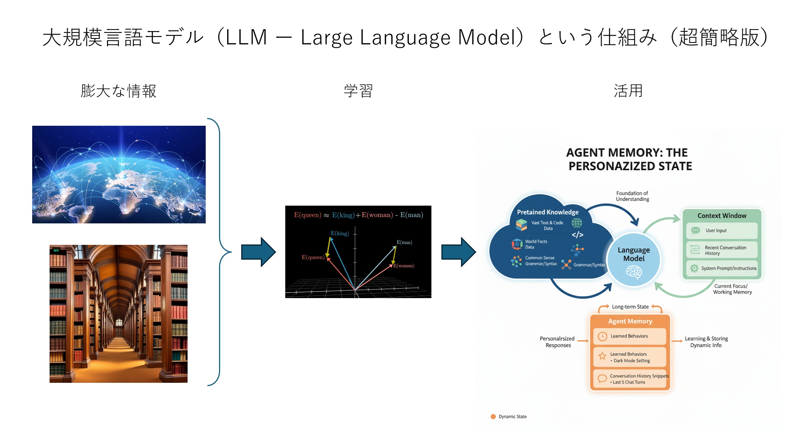

2026-10-19 第２回準備幹事会（オンライン）
■ 開催日時
10/19 (月) 20:00 ～ 21:00
■ 接続情報
・ Zoom 接続情報
Zoom ミーティングに参加する
ミーティングID: 849 3122 4798
パスコード: 4S7fcn
■ 幹事会参加登録
【伝助】修道２５幹事会日程調整（２回目）
https://densuke.biz/list?cd=pq2SAXnvHkhx29bc
参加予定者７名（伝助掲載順）： 草野、唐崎、川本雄、森、大利、国原、高橋
■ 同期会出欠連絡
28.5 名が参加予定。
【伝助】11/28 (土) 同期会の出欠連絡
https://densuke.biz/list?cd=XJev3HKy7peYvr5F
■ 議題
(1) 同期会の内容
(2) 関東支部総会の担当学年対応
(3) 安否確認往復はがき
(4) 同期生専用ページの情報掲載とアクセス管理
・名簿、写真集、動画・議論の記録を掲載する方向で検討する。
・セキュリティ対策は重要だが、利用しやすさとのバランスを取り、段階的に進める。
・将来的には Google アカウントや Google Groups を活用した限定共有も検討する。
・当面は認証方式を変更せず、まずは方針の共有に留める。
■ 関連リンク
・ 修道２５回 同期会・イベント情報
・ 気楽に集まる会トップページ
・ YouTube プレイリスト
|
 |